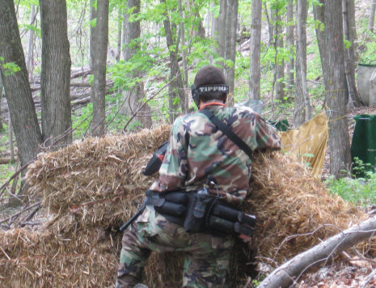
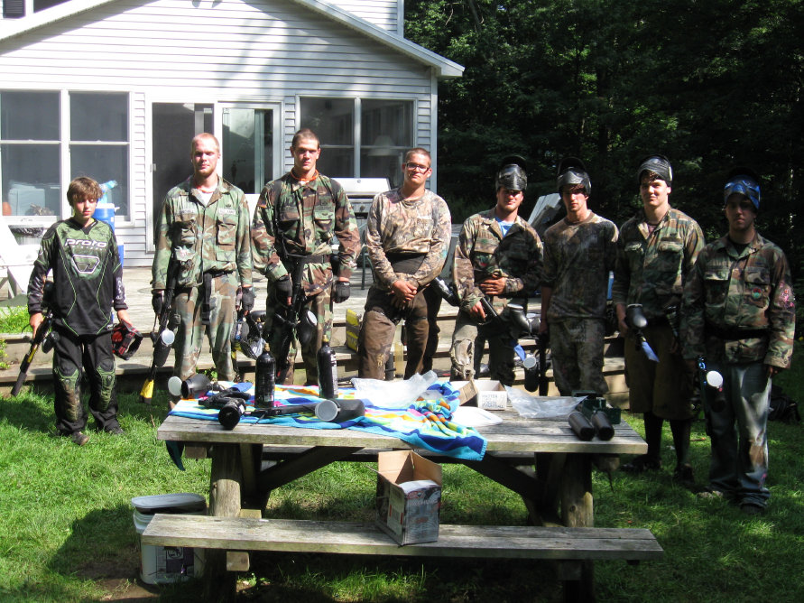
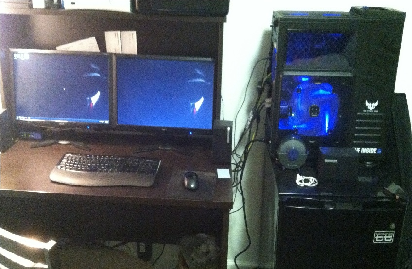

Paintball has been a very important hobby to me. I have enjoyed playing for about five or six years now. I haven't played recently due to me being broke and lack of people that want to play. However, when I did play it was primarily out in the woods. My friends and I would build forts in their woods and we would generally play attack and defend type games.
I have a pretty generic gun, the Tippmann 98 Custom. It is overall a pretty good gun it is a really durable model and is perfect for throwing around out in the woods. I haven't played much speedball so it works out quite well. I have a number of upgrades on it and still own the gun I'm holding in these pictures.

Throughout my life I have been very interested in computers, how they work both inside and out. I used to tear apart my computer at home and I think I may have broken it on a number of occasions and blamed it on my brother. Over the years I have gained a pretty good working knowledge of what I should and shouldn't do. Unfortunately, my high school did not offer very much when it came to computer classes. The only thing they may have offered was a Adobe Dreamweaver class or a comparable WYSIWYG web class. So pretty much I learned a lot on my own and a lot through Google.
Below is a picture of the toy I just built this year. I wanted to be a nerd and show it off as well as boast my setup. I really enjoyed building it. This is my first desktop build that I ordered parts and put it together. It was really a lot of fun and look forward to my next build which I may be doing for my brother.
